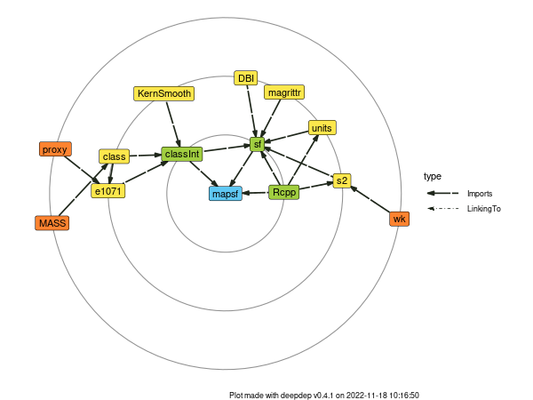

1 mapsf
1.1 Introduction

The R spatial ecosystem is rich, dynamic and mature and several packages allow to import, process and represent spatial data. The mapsf package (Giraud, 2021) relies on this ecosystem to integrate the creation of quality thematic maps in R workflows. mapsf uses sf objects to produce base graphics.

We will mainly use mapsf in this document as it has a quite complete set of features, it is easy to use and it is relatively lightweight.

The aim of mapsf is to obtain thematic maps with the visual quality of those build with a classical mapping or GIS software.
Users of the package could belong to one of two categories: cartographers willing to use R or R users willing to create maps. Therefore, its functions have to be intuitive to cartographers and ensure compatibility with common R workflows.
mapsf functions can be classified in the following categories:
Symbology
The main function,mf_map(), displays map layers on a georeferenced plot. It has three main arguments (x, ansfobject;var, the name(s) of a variable(s) to map;type, the map layer type). Many parameters are available to fine tune the cartographic representations. These parameters are the common ones found in GIS and automatic cartography tools (e.g. classification and color palettes used in choropleth maps, symbols sizes used in proportional symbols maps…).Map Layout
Along with the cartographic functions, some other functions are dedicated to layout design (e.g. legends, scale bar, north arrow, title, credits…).Utility Functions
A set of functions is dedicated to the creation of spatial objects (e.g. links creation) or other utility tasks (e.g. color palette management, class intervals extraction, sample dataset import…).
1.2 Documentation
- A website

A ‘Get started’ vignette.
‘How to’ vignettes:

1.3 Exercice
- Install
mapsf.
- What is the version of the package?
- What is new in the package?